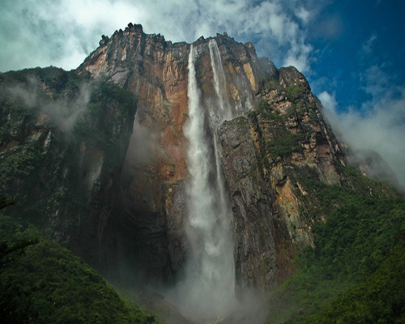
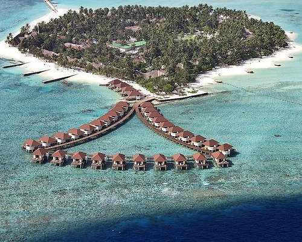

WHERE NEXT?
STORY TELLING ABOUT TRIP AROUND THE WORLD

BALI/INDONESIA
SURFING
You can't just say you've surfed Indonesia – it's like saying you've hiked the Himalaya. Clocking up to 61,567 miles of coastline across an archipelago of 17,508 islands, much of this land is kissed by the consistent swell channels of the Indian Ocean, and much of it is fringed by volcanic reefs that help raise barrels and tubes and perfect wedge waves. This is the War and Peace of surfing destinations.
HOW ABOUT GO TO
LANDMARK
A landmark is a compound word of land and mark, and is an object built on land that can be seen from afar. It is a word that refers to a unique topography or facility that represents a region or is distinguished from other regions. In ancient times, mountains, large trees, rocks, etc. This was taken as a milestone. It was also used as a marker so that explorers or travelers could return to a specific place after visiting various areas. Landmarks that people have made since B.C. include pyramids, pagodas in China, and cathedrals in Europe.

DISCOVERY
choose the place where you want to visit
- 
Venezuela
Few countries in the world have this degree of natural beauty: Andean peaks, Caribbean coastline, idyllic islands, grasslands teeming with wildlife, the steamy Orinoco Delta and the world's highest waterfall, Angel Falls.
- 
Maldives
Unrivaled luxury, stunning white-sand beaches and a dazzling underwater world make Maldives an obvious choice for a true holiday of a lifetime.

Iceland
Hitting headlines, topping bucket lists, wooing nature lovers and dazzling increasing numbers of visitors the talents of this breathtaking northern destination are seemingly endless.